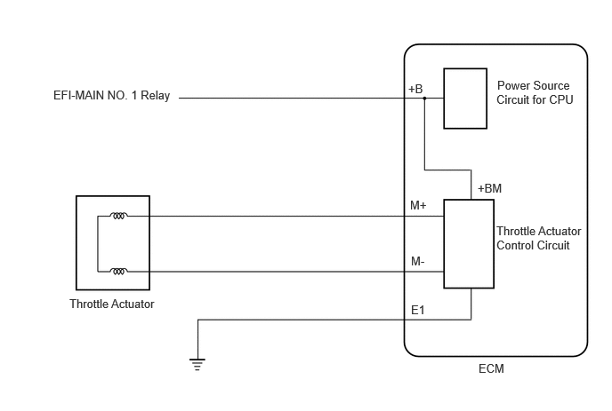

| Last Modified: 10-07-2025 | 6.11:8.1.0 | Doc ID: RM100000002GMOJ |
| Model Year Start: 2024 | Model: Tacoma | Prod Date Range: [12/2023 - ] |
| Title: T24A-FTS (ENGINE CONTROL): SFI SYSTEM (for Gasoline Model): P065714; Actuator Supply Voltage "A" Circuit Short to Ground or Open; 2024 - 2026 MY Tacoma [12/2023 - ] | ||
|
DTC |
P065714 |
Actuator Supply Voltage "A" Circuit Short to Ground or Open |
DESCRIPTION
The electronic throttle control system has a dedicated power supply circuit. The voltage (+BM) is monitored and when it is low (less than 4 V), the ECM determines that there is a malfunction in the electronic throttle control system and cuts off the current to the throttle actuator.
When the voltage becomes unstable, the electronic throttle control system itself becomes unstable. For this reason, when the voltage is low, the current to the throttle actuator is cut. If repairs are made and the system returns to normal, turn the ignition switch off. If a malfunction is not detected the ECM allows current to flow to the throttle actuator so that it can operate.
|
DTC No. |
Detection Item |
DTC Detection Condition |
Trouble Area |
MIL |
DTC Output from |
Priority |
Note |
|---|---|---|---|---|---|---|---|
|
P065714 |
Actuator Supply Voltage "A" Circuit Short to Ground or Open |
An open or short is detected in the electronic throttle control system power source (+BM) circuit (1 trip detection logic). |
|
Comes on |
Engine |
A |
|
MONITOR DESCRIPTION
The ECM monitors the battery supply voltage applied to the throttle actuator.
When the power supply voltage (+BM) is less than 4 V for 0.8 seconds or more, the ECM interprets this as an open or ground short in the power supply circuit, then illuminates the MIL and stores this DTC.
MONITOR STRATEGY
|
Related DTCs |
P0658: Electronic throttle actuator supply voltage circuit range check (low voltage) |
|
Required Sensors/Components (Main) |
Throttle actuator Throttle valve |
|
Required Sensors/Components (Related) |
- |
|
Frequency of Operation |
Continuous |
|
Duration |
0.8 seconds |
|
MIL Operation |
Immediate |
|
Sequence of Operation |
None |
TYPICAL ENABLING CONDITIONS
|
Monitor runs whenever the following DTCs are not stored |
None |
|
Both of the following conditions are met |
- |
|
Command to electronic throttle actuator power |
On |
|
Battery voltage |
8 V or higher |
TYPICAL MALFUNCTION THRESHOLDS
|
Electronic throttle actuator power supply voltage |
Less than 4 V |
CONFIRMATION DRIVING PATTERN
HINT:
- After repair has been completed, clear the DTC
and then check that the vehicle has returned to
normal by performing the following All Readiness
check procedure.
Click here
![2024 - 2026 MY Tacoma [12/2023 - ]; T24A-FTS (ENGINE CONTROL): SFI SYSTEM (for Gasoline Model): DIAGNOSIS SYSTEM](../../../../stylegraphics/info.gif)
- When clearing the permanent DTCs, refer to the
"CLEAR PERMANENT DTC" procedure.
Click here
- Clear the DTCs (even if no DTCs are stored, perform the clear DTC procedure).
- Turn the ignition switch off and wait for at least 30 seconds.
- Turn the ignition switch to ON [A].
- Start the engine.
- Slowly depress the accelerator pedal, raise the engine speed to approximately 3000 rpm over approximately 5 seconds, and then idle the engine [B].
- Check that 16 seconds or more have elapsed since the engine was started.
- Enter the following menus: Powertrain / Engine / Trouble Codes [C].
- Read the pending DTCs.
HINT:
- If a pending DTC is output, the system is malfunctioning.
- If a pending DTC is not output, perform the following procedure.
- Enter the following menus: Powertrain / Engine / Utility / All Readiness.
- Input the DTC: P065714.
- Check the DTC judgment result.
HINT:
- If the judgment result is NORMAL, the system is normal.
- If the judgment result is ABNORMAL, the system is malfunctioning.
- If the judgment result is INCOMPLETE, perform steps [B] through [C] again.
- [A] to [C]: Normal judgment procedure.
The normal judgment procedure is used to complete DTC judgment and also used when clearing permanent DTCs.
- When clearing the permanent DTCs, do not disconnect the cable from the battery terminal or attempt to clear the DTCs during this procedure, as doing so will clear the universal trip and normal judgment histories.
FAIL-SAFE
When any of these DTCs or other DTCs relating to Electronic Throttle Control System (ETCS) malfunctions are stored, the ECM enters fail-safe mode. During fail-safe mode, the ECM cuts the current to the throttle actuator, and the throttle valve is returned to a 9° throttle valve opening angle by the return spring. The ECM then adjusts the engine output by controlling the fuel injection (intermittent fuel-cut) and ignition timing, in accordance with the accelerator pedal angle, to allow the vehicle to continue running at a minimal speed. If the accelerator pedal is depressed firmly and gently, the vehicle can be driven slowly.
Fail-safe mode continues until a pass condition is detected, and the ignition switch is turned off.
PROCEDURE
PROCEDURE
|
1. |
CHECK DTC OUTPUT |
(a) Read the DTCs.
Powertrain > Engine > Trouble Codes
|
Result |
Proceed to |
|---|---|
|
DTCs are not output |
A |
|
P065714 is output |
B |
| A |  |
| B | |
REPLACE ECM Click here
|